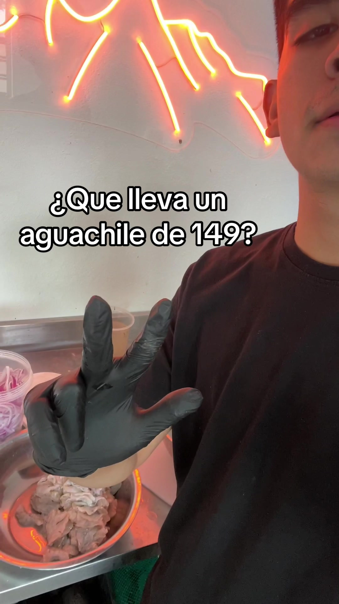
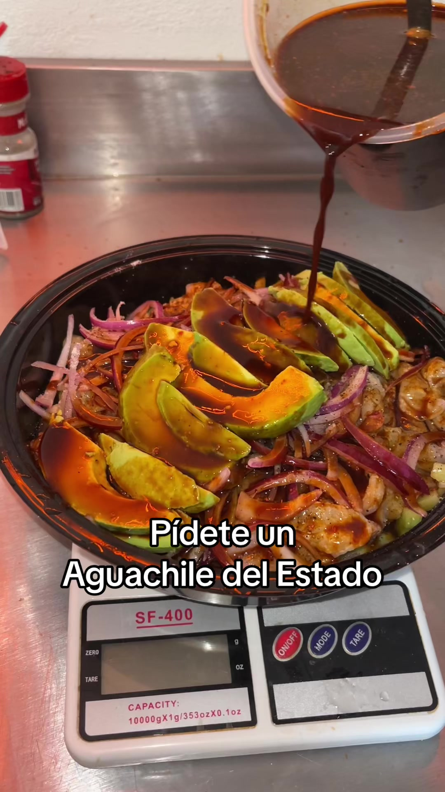

Análisis económico
Analizamos tus productos, costos, márgenes, frecuencia de compra y valor de cada cliente para aumentar tus ventas sin sacrificar rentabilidad.
Si ya vendes al menos $100,000 MXN al mes, producimos y gestionamos tus anuncios, contenido orgánico y estrategias de recompra.
Si no lo logramos, no pagas. Garantizado por contrato.Ventas de una marca de ropa en 3 meses
Índice de ventas · Base inicial = 100Analizamos tus productos, costos, márgenes, frecuencia de compra y valor de cada cliente para aumentar tus ventas sin sacrificar rentabilidad.
Diseñamos una oferta donde tus clientes perciben mucho más valor del que pagan, para que comprarte sea una decisión fácil.
Lanzamos tus primeros anuncios y videos orgánicos para atraer clientes y obtener datos reales desde el inicio.
Analizamos los resultados, eliminamos lo que no funciona y mejoramos lo que sí, hasta tener una estrategia de ventas repetible.
Invertimos más en los anuncios ganadores, replicamos el contenido orgánico que funciona y fortalecemos la recompra para multiplicar tus ventas.
Mostramos tu oferta a quienes pueden comprar y medimos cuánto cuesta conseguir cada venta.
Producimos videos de tus productos para que más personas en Tepic conozcan tu negocio.
Usamos la frecuencia de compra para decidir cuándo ofrecerle a cada cliente un motivo para volver.
La diferencia entre contratar una agencia tradicional, incorporar a alguien de marketing o trabajar con un equipo enfocado en hacer crecer tu negocio.
Costo mensual estimado
$3,000–$6,000Principalmente gestión de redes.
Sueldo mensual de referencia
$10,000+Más prestaciones y herramientas.
Honorarios mensuales
$7,900Estrategia integral enfocada en ventas.
Crecimiento mensual sostenido con publicidad pagada.
Índice de ventas · Base 100Contenido orgánico viral con más de 100 millones de vistas.
Índice de ventas · Base 100Contenido orgánico, anuncios e incentivos para la recompra.
Índice de ventas · Base 100| Monto gastado |
|---|
| $56,232.26 |
| $52,873.30 |
| $27,839.38 |
| $9,603.87 |
| Monto gastado |
|---|
| $23,677.05 |
| $11,119.55 |
| $5,051.92 |
| $4,325.71 |
| Monto gastado |
|---|
| $20,000.37 |
| $15,000.64 |
| $23,450.75 |
| $19,249.52 |
| Monto gastado |
|---|
| $8,450.28 |
| $6,200.46 |
| $7,875.50 |
| $7,071.01 |
$298,021.57 en presupuestos publicitarios administrados






No prometemos likes ni seguidores. Nos comprometemos con una meta de crecimiento en ventas, medible desde el primer día.
Analizamos tus ventas actuales y establecemos una meta clara: aumentar tu facturación mensual en $100,000.
Lanzamos las primeras campañas en 24–48 horas y optimizamos nuestra estrategia continuamente para alcanzar la meta.
Si al finalizar los 90 días no alcanzamos el crecimiento acordado, aplicamos nuestra garantía sobre los honorarios de ANOVA.
Garantía sujeta a los criterios de medición, elegibilidad y condiciones del contrato. La inversión publicitaria se considera por separado.
Todo lo que necesitas saber antes de empezar a crecer con ANOVA.
Evaluar mi negocioNuestros honorarios son de $7,900 MXN mensuales. La inversión en publicidad se paga por separado y depende del tamaño de tu negocio. Durante la llamada evaluamos el presupuesto adecuado para ti.
Trabajamos con un presupuesto publicitario mínimo de $6,000 MXN mensuales. Para negocios que facturan más de $170,000 MXN al mes, el mínimo es de $10,000 MXN. Esta inversión es adicional a nuestros honorarios.
Nuestro objetivo es generar $100,000 MXN adicionales en ventas mensuales dentro de los primeros 90 días. Comenzamos a ejecutar y medir desde las primeras etapas, aunque los resultados y el tiempo para conseguirlos varían según cada negocio.
ANOVA ofrece una garantía vinculada al objetivo de crecimiento de $100,000 MXN adicionales en ventas mensuales dentro de 90 días. Si no alcanzamos la meta, se aplica la condición de no pago de nuestros honorarios conforme a lo establecido en el contrato.
No necesitas tener campañas publicitarias activas. Evaluamos tu situación actual y definimos qué necesitamos para comenzar. Sí será importante contar con los accesos y materiales necesarios para implementar la estrategia.
No necesariamente. Podemos desarrollar contenido centrado en tus productos, servicios y negocio sin que tengas que aparecer frente a la cámara. Si decides participar, también podemos aprovecharlo para generar confianza y cercanía con tus clientes.
No. En ANOVA nos encargamos de crear, gestionar, analizar y optimizar las campañas publicitarias. Tú te concentras en operar tu negocio y atender a tus clientes. Solo necesitaremos tu colaboración para proporcionar accesos, materiales y aprobar decisiones importantes.
Análisis económico de tu negocio, diseño de una oferta de valor, anuncios de respuesta directa, contenido orgánico de alcance local, optimización de campañas y estrategias de recompra y escalamiento.
No. Nos especializamos en negocios con potencial para incrementar sus ventas a través de publicidad, contenido y recompra. Antes de comenzar, evaluamos tu facturación, ticket promedio, inversión disponible y capacidad de crecimiento.
Agenda una llamada gratuita de 30 minutos. Analizaremos tu negocio, identificaremos oportunidades de crecimiento y te mostraremos cómo nuestro método puede ayudarte a vender más.
+$100,000 en ventas mensuales en 90 días, o no pagas.Antes de agendar, responde cinco preguntas rápidas para confirmar si ANOVA es adecuado para tu negocio.
Empezar mi evaluación →Sin compromiso. Garantía sujeta a las condiciones del servicio.
Responde cinco preguntas para evaluar tu negocio.
ANOVA guarda un identificador, la fecha, tus respuestas y el resultado para evaluar tu negocio. Si compartes tu teléfono, se utilizará para dar seguimiento a esta evaluación. El resultado es preliminar y la garantía comercial está sujeta al contrato.